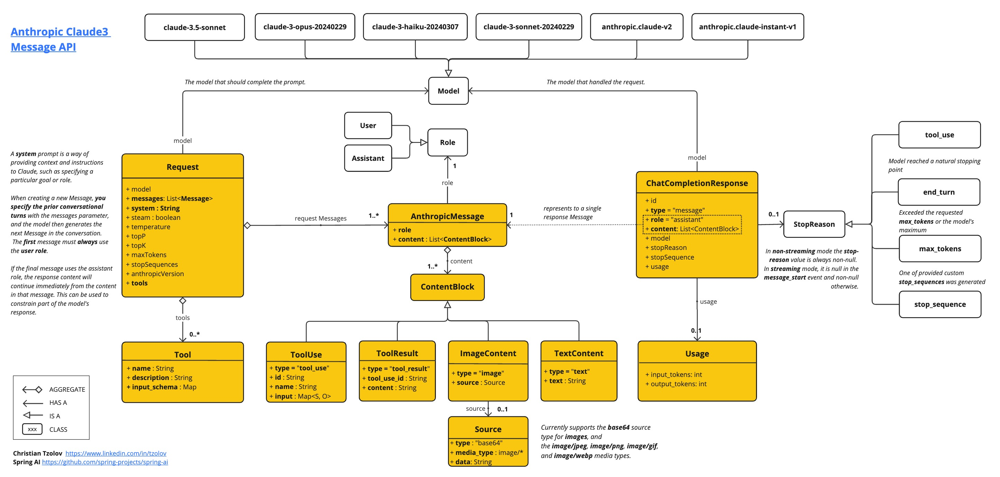
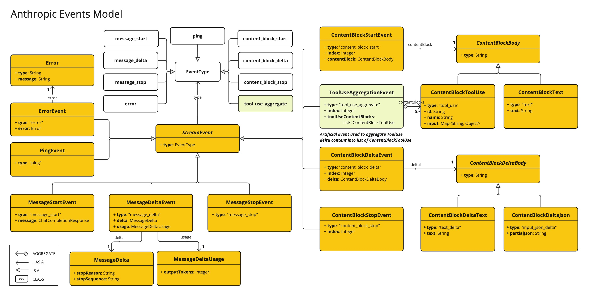

Anthropic 3 聊天 #
[ Anthropic Claude]( https://www.anthropic.com/) 是一系列基础 AI 模型，可用于各种应用程序。对于开发人员和企业，您可以利用 API 访问并直接在 [ Anthropic 的 AI 基础设施]( https://www.anthropic.com/api)之上进行构建。 Spring AI 支持 Anthropic [ Messaging API]( https://docs.anthropic.com/claude/reference/messages_post) 进行同步和流式文本生成。
先决条件 #
您需要在 Anthropic 门户上创建一个 API 密钥。
在 [
Anthropic API 控制面板](
https://console.anthropic.com/dashboard)上创建一个账户，并在 [
Get API Keys](
https://console.anthropic.com/settings/keys) 页面上生成 API 密钥。
Spring AI 项目定义了一个名为 spring.ai.anthropic.api-key 的配置属性，您应该将其设置为从 anthropic.com 获取的 API 密钥的值。
您可以在 application.properties 文件中设置此配置属性：
spring.ai.anthropic.api-key=<your-anthropic-api-key>
为了在处理 API 密钥等敏感信息时增强安全性，您可以使用 Spring 表达式语言 （SpEL） 来引用自定义环境变量：
# In application.yml
spring:
ai:
anthropic:
api-key: ${ANTHROPIC_API_KEY}
# In your environment or .env file
export ANTHROPIC_API_KEY=<your-anthropic-api-key>
您还可以在应用程序代码中以编程方式设置此配置：
// Retrieve API key from a secure source or environment variable
String apiKey = System.getenv("ANTHROPIC_API_KEY");
添加存储库和 BOM #
Spring AI 工件发布在 Maven Central 和 Spring Snapshot 存储库中。请参阅 [ Artifact Repositories](../../getting-started.html#artifact-repositories) 部分，将这些存储库添加到您的构建系统中。 为了帮助进行[ 依赖项管理](../../getting-started.html#dependency-management)，Spring AI 提供了一个 BOM（物料清单），以确保在整个项目中使用一致的 Spring AI 版本。请参阅[ 依赖项管理](../../getting-started.html#dependency-management)部分，将 Spring AI BOM 添加到您的构建系统中。
自动配置 #
Spring AI 为 Anthropic Chat Client 提供 Spring Boot 自动配置。要启用它，请将以下依赖项添加到项目的 Maven pom.xml 或 Gradle build.gradle 文件中：
聊天属性 #
重试属性 #
前缀 spring.ai.retry 用作属性前缀，允许您为 Anthropic 聊天模型配置重试机制。
连接属性 #
前缀 spring.ai.anthropic 用作允许您连接到 Anthropic 的属性前缀。
配置属性 #
前缀 spring.ai.anthropic.chat 是属性前缀，它允许你为 Anthropic 配置聊天模型实现。
运行时选项 #
[
AnthropicChatOptions.java](
https://github.com/spring-projects/spring-ai/blob/main/models/spring-ai-anthropic/src/main/java/org/springframework/ai/anthropic/[AnthropicChatOptions.java](https://github.com/spring-projects/spring-ai/blob/main/models/spring-ai-anthropic/src/main/java/org/springframework/ai/anthropic/AnthropicChatOptions.java)) 提供模型配置，例如要使用的模型、温度、最大令牌计数等。
启动时，可以使用 AnthropicChatModel(api, options) constructor 或 spring.ai.anthropic.chat.options.* properties 配置默认选项。
在运行时，您可以通过向 Prompt 调用添加新的、特定于请求的选项来覆盖默认选项。例如，要覆盖特定请求的默认模型和温度：
ChatResponse response = chatModel.call(
new Prompt(
"Generate the names of 5 famous pirates.",
AnthropicChatOptions.builder()
.model("claude-3-7-sonnet-latest")
.temperature(0.4)
.build()
));
工具/函数调用 #
您可以使用 AnthropicChatModel 注册自定义 Java 工具，并让 Anthropic Claude 模型智能地选择输出包含参数的 JSON 对象，以调用一个或多个已注册的函数。这是一种将 LLM 功能与外部工具和 API 连接起来的强大技术。阅读有关[
工具调用](../tools.html)的更多信息。
模 态 #
多模态是指模型同时理解和处理来自各种来源的信息的能力，包括文本、pdf、图像、数据格式。
图像 #
目前，Anthropic Claude 3 支持图像的 base64 源类型，以及 image/jpeg、image/png、image/gif 和 image/webp 媒体类型。有关更多信息，请查看 [
Vision 指南](
https://docs.anthropic.com/claude/docs/vision) 。Anthropic Claude 3.5 Sonnet 还支持 application/pdf 文件的 pdf 源类型。
Spring AI 的 Message 接口通过引入 Media 类型来支持多模态 AI 模型。此类型包含有关消息中媒体附件的数据和信息，使用 Spring org.springframework.util.MimeType 和 java.lang.Object 作为原始媒体数据。
下面是从 [
AnthropicChatModelIT.java](
https://github.com/spring-projects/spring-ai/blob/main/models/spring-ai-anthropic/src/test/java/org/springframework/ai/anthropic/[AnthropicChatModelIT.java](https://github.com/spring-projects/spring-ai/blob/main/models/spring-ai-anthropic/src/test/java/org/springframework/ai/anthropic/AnthropicChatModelIT.java)) 中提取的简单代码示例，演示了用户文本与图像的组合。
var imageData = new ClassPathResource("/multimodal.test.png");
var userMessage = new UserMessage("Explain what do you see on this picture?",
List.of(new Media(MimeTypeUtils.IMAGE_PNG, this.imageData)));
ChatResponse response = chatModel.call(new Prompt(List.of(this.userMessage)));
logger.info(response.getResult().getOutput().getContent());
它将 multimodal.test.png 图像作为输入：
 以及文本消息“Explain what do you see on this picture？”，并生成如下响应：
以及文本消息“Explain what do you see on this picture？”，并生成如下响应：
PDF 格式 #
从 Sonnet 3.5 开始，提供 [
PDF 支持（测试版）。](
https://docs.anthropic.com/en/docs/build-with-claude/pdf-support) 使用 application/pdf 媒体类型将 PDF 文件附加到消息中：
var pdfData = new ClassPathResource("/spring-ai-reference-overview.pdf");
var userMessage = new UserMessage(
"You are a very professional document summarization specialist. Please summarize the given document.",
List.of(new Media(new MimeType("application", "pdf"), pdfData)));
var response = this.chatModel.call(new Prompt(List.of(userMessage)));
样品控制器 #
[
创建一个新](
https://start.spring.io/)的 Spring Boot 项目，并将 添加到您的 spring-ai-starter-model-anthropic pom（或 gradle）依赖项中。
在 src/main/resources 目录下添加 application.properties 文件，以启用和配置 Anthropic 聊天模型：
spring.ai.anthropic.api-key=YOUR_API_KEY
spring.ai.anthropic.chat.options.model=claude-3-5-sonnet-latest
spring.ai.anthropic.chat.options.temperature=0.7
spring.ai.anthropic.chat.options.max-tokens=450
这将创建一个 AnthropicChatModel 实现，您可以将其注入到您的类中。下面是一个简单的 @Controller 类示例，该类使用 chat 模型生成文本。
@RestController
public class ChatController {
private final AnthropicChatModel chatModel;
@Autowired
public ChatController(AnthropicChatModel chatModel) {
this.chatModel = chatModel;
}
@GetMapping("/ai/generate")
public Map generate(@RequestParam(value = "message", defaultValue = "Tell me a joke") String message) {
return Map.of("generation", this.chatModel.call(message));
}
@GetMapping("/ai/generateStream")
public Flux<ChatResponse> generateStream(@RequestParam(value = "message", defaultValue = "Tell me a joke") String message) {
Prompt prompt = new Prompt(new UserMessage(message));
return this.chatModel.stream(prompt);
}
}
手动配置 #
AnthropicChatModel 实现 ChatModel 和 StreamingChatModel，并使用[
低级 AnthropicApi 客户端](#low-level-api)连接到 Anthropic 服务。
将 spring-ai-anthropic 依赖项添加到项目的 Maven pom.xml 文件中：
<dependency>
<groupId>org.springframework.ai</groupId>
<artifactId>spring-ai-anthropic</artifactId>
</dependency>
或您的 Gradle build.gradle 构建文件。
dependencies {
implementation 'org.springframework.ai:spring-ai-anthropic'
}
接下来，创建一个 AnthropicChatModel 并将其用于文本生成：
var anthropicApi = new AnthropicApi(System.getenv("ANTHROPIC_API_KEY"));
var chatModel = new AnthropicChatModel(this.anthropicApi,
AnthropicChatOptions.builder()
.model("claude-3-opus-20240229")
.temperature(0.4)
.maxTokens(200)
.build());
ChatResponse response = this.chatModel.call(
new Prompt("Generate the names of 5 famous pirates."));
// Or with streaming responses
Flux<ChatResponse> response = this.chatModel.stream(
new Prompt("Generate the names of 5 famous pirates."));
AnthropicChatOptions 提供聊天请求的配置信息。AnthropicChatOptions.Builder 是 Fluent 选项生成器。
低级 AnthropicApi 客户端 #
[
AnthropicApi](
https://github.com/spring-projects/spring-ai/blob/main/models/spring-ai-anthropic/src/main/java/org/springframework/ai/anthropic/api/[AnthropicApi](https://github.com/spring-projects/spring-ai/blob/main/models/spring-ai-anthropic/src/main/java/org/springframework/ai/anthropic/api/AnthropicApi.java).java) 为 [
Anthropic Message API](
https://docs.anthropic.com/claude/reference/messages_post) 提供了轻量级的 Java 客户端。
以下类图说明了 AnthropicApi 聊天界面和构建块：


以下是如何以编程方式使用 api 的简单代码段：
AnthropicApi anthropicApi =
new AnthropicApi(System.getenv("ANTHROPIC_API_KEY"));
AnthropicMessage chatCompletionMessage = new AnthropicMessage(
List.of(new ContentBlock("Tell me a Joke?")), Role.USER);
// Sync request
ResponseEntity<ChatCompletionResponse> response = this.anthropicApi
.chatCompletionEntity(new ChatCompletionRequest(AnthropicApi.ChatModel.CLAUDE_3_OPUS.getValue(),
List.of(this.chatCompletionMessage), null, 100, 0.8, false));
// Streaming request
Flux<StreamResponse> response = this.anthropicApi
.chatCompletionStream(new ChatCompletionRequest(AnthropicApi.ChatModel.CLAUDE_3_OPUS.getValue(),
List.of(this.chatCompletionMessage), null, 100, 0.8, true));
有关详细信息，请遵循 [ AnthropicApi.java]( https://github.com/spring-projects/spring-ai/blob/main/models/spring-ai-anthropic/src/main/java/org/springframework/ai/anthropic/api/[AnthropicApi.java](https://github.com/spring-projects/spring-ai/blob/main/models/spring-ai-anthropic/src/main/java/org/springframework/ai/anthropic/api/AnthropicApi.java)) 的 JavaDoc。
低级 API 示例 #
- AnthropicApiIT.java 测试提供了一些如何使用轻量级库的一般示例。